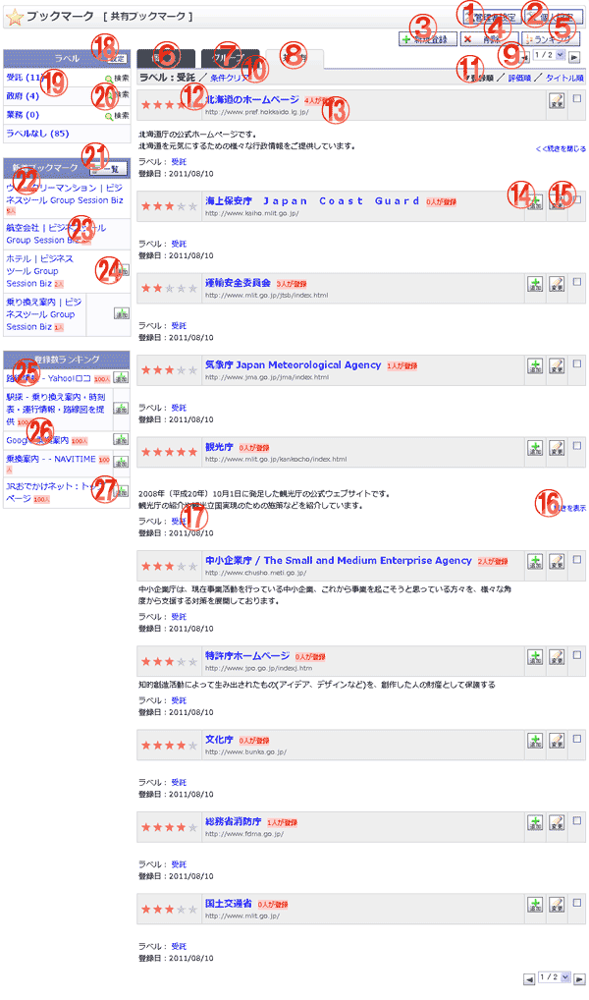

共有のブックマークを一覧表示する画面です。

機能説明
管理者設定ボタン管理者設定画面へ遷移します。 |
個人設定ボタン個人設定画面へ遷移します。 |
|---|---|
新規登録ボタンブックマーク登録-URL入力画面へ遷移します。 |
削除ボタンブックマーク削除確認画面へ遷移します。一覧でチェックを付けたブックマークを削除します。 |
ランキングボタンブックマーク登録ランキング画面へ遷移します。 |
個人タブ個人ブックマークの一覧を表示します。 |
グループタブグループブックマークの一覧を表示します。 |
共有タブ共有ブックマークの一覧を表示します。 |
ページングコンボ・前頁・次頁ページングコンボで任意のページへ、前頁アイコンクリックで前のページへ、次頁アイコンクリックで次のページへそれぞれ遷移します。 |
条件クリアブックマーク検索のラベル抽出条件をクリアします。 |
ソート条件クリックによって一覧のソート条件の切り替えを行います。現在ソート条件になっている項目をもう1度クリックすると「昇順」「降順」が切り替わります。 |
ブックマークリンクブックマークのページ先が別ウィンドウで開きます。 |
登録人数コメント・評価画面へ遷移します。 |
追加ボタンブックマーク登録-URL入力画面へ遷移します。 |
変更ボタンブックマーク編集画面へ遷移します。 |
続きを表示／閉じるコメントの続きを表示します。もう一度クリックするとコメントの続きを非表示にします。 |
ラベルクリックするとブックマーク検索のラベル抽出条件に設定されます。 |
ラベル設定ボタンラベル設定画面へ遷移します。 |
ラベルクリックするとブックマーク検索のラベル抽出条件に設定されます。 |
ウェブ検索リンク「ウェブ検索」リンククリックでラベルのウェブ検索を行います。 |
新着ブックマーク一覧ボタン新着ブックマーク一覧画面へ遷移します。 |
新着ブックマークリンクブックマークのページ先が別ウィンドウで開きます。 |
新着ブックマーク登録人数リンクコメント・評価画面へ遷移します。 |
新着ブックマーク追加ボタンブックマーク登録-URL入力画面へ遷移します。 |
登録数ランキングブックマークリンクブックマークのページ先が別ウィンドウで開きます。 |
登録数ランキング登録人数リンクコメント・評価画面へ遷移します。 |
登録数ランキングブックマーク追加ボタンブックマーク登録-URL入力画面へ遷移します。 |